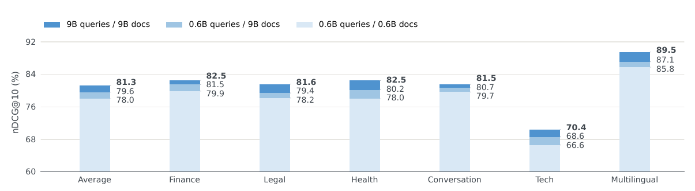
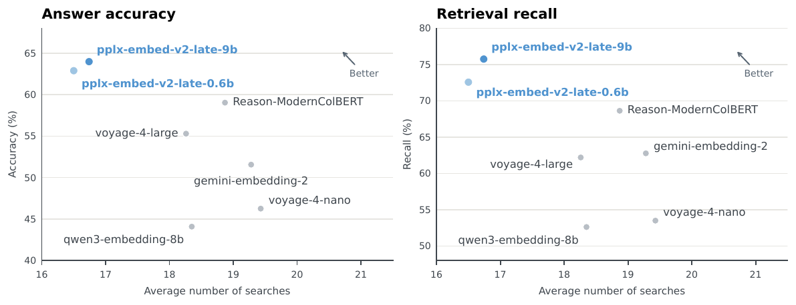

Perplexity 发布了两个多向量检索模型 pplx-embed-v2-late，参数量分别是 0.6B 和 9B，能编码文本、图片和文档页面截图。它们属于"后期交互"检索：文档里每个 token 都存一个 128 维向量，查询的每个 token 也各算一个向量，打分时每个查询向量找文档里内积最大的那个向量，再把这些最大值加起来（MaxSim）。两个模型不是各自用对比学习训出来的，而是都去逐 token 模仿同一个 18B 教师模型输出的向量，所以两者落在同一个向量空间：文档库可以离线用 9B 建索引，线上查询用 0.6B 编码，直接拿来打分。在作者整理的 72 个领域检索任务上，9B 平均 nDCG@10 为 81.3%，比次优的 nemotron-3-embed-8b 高 1.6 个百分点；0.6B 查询配 9B 文档索引得到 79.6%，比两端都用 0.6B 高 1.6 个百分点，查询端成本不变。这是一份技术报告，篇幅不长，主要结果的可信度要分开看：领域基准的任务清单不公开，两个线上基准的标注又部分来自 Perplexity 自己的线上系统，只有 ViDoRe-V3 和 BrowseComp+ 可以独立复现。
1. 为什么做后期交互，为什么要蒸馏
检索模型通常在两种方案之间取舍。单向量模型把整段文档压成一个向量，用近似最近邻搜索很快，但细节信息会丢。cross-encoder 把查询和文档拼在一起过一遍模型，效果好，但每个候选都要单独算一次，只能用于重排。后期交互介于两者之间：文档 token 向量离线算好存下来，查询时只算查询的向量，再做 MaxSim。代价是存储大，所以这篇把每个 token 的向量压到 128 维。
作者的另一个判断是：小模型直接做对比学习效果不够，让它去拟合大模型给出的 token 向量更好，尤其是小尺寸模型。这样做还带来一个副产品，同一个教师蒸馏出的不同尺寸学生可以互换使用。不过报告正文没有给出"蒸馏 vs 直接对比学习"的对比数字，这个判断目前只能当作作者的经验。
2. 训练流程
2.1 18B 教师：两阶段对比学习
教师从 Qwen3.5-27B 剪掉最后 20 层得到 18B，并把注意力层的因果遮罩去掉，让每个 token 能看到前后文。训练分两步。
第一步用查询-文档对。数据来自 28 个数据集，按语言和领域再切成 981 个子集，共 1.86 亿对，其中文本-文本 88.3%、文本-图片 8.3%、文本-文档截图 3.4%，文本对里有 1,400 万对是从 PDF 段落反向生成查询合成的。训练时调整采样权重，把三类比例改成 56.5%、30.9%、12.6%，图片和截图被大幅上采样。每个批次只从一个子集里取样，这样同一批里的其他文档（作为负例）和正例更相近，更难区分。为了让各子集按目标比例、并且均匀地间隔出现，作者没有每步独立随机抽，而是这样排：把 0 到 1 切成 981 段，每段长度等于对应子集的采样比例，同一来源的子集挨在一起；第 步取"随机起点 "的小数部分（0.618 是黄金比例的倒数），落在哪一段就从哪个子集取这一批。这串点在 0 到 1 上铺得很均匀，每段被命中的次数接近它的长度，命中时刻也均匀错开；同一来源的子集连成一大段，所以"按比例、间隔均匀"在来源这一层也成立。对比批大小为 16,384 对，用 LoRA（秩 128）训练。和正例 MaxSim 分数相差不到 0.2 的批内文档不算负例，用来减少假负例。MaxSim 写成了 Triton 算子，避免显式存储 token 级相似度矩阵。
第二步合并 LoRA 后加一个秩 32 的新适配器，冻结视觉部分，只用文本三元组训练：每个查询配一个正例和最多 4 个难负例。部分难负例是把高度模板化文档里的关键信息改掉合成的，比如同一格式的财报只改一个数字，逼模型看细节。
2.2 学生：逐 token 拟合教师向量
学生的损失很直接：对查询和文档的每个有效 token，算学生向量和教师向量（都做 L2 归一化）之间的欧氏距离，查询部分和文档部分分别取平均再相加。教师不更新。
因为这个损失不依赖批内负例，一个批次里可以混合多个子集，梯度更稳。9B 学生基于 Qwen3.5-9B，作者发现只用 LoRA 拟合不到位，推测是逐 token 对齐对整个向量空间的约束太强，于是把文本部分最后 8 层全量微调，其余用 LoRA。0.6B 学生从 Qwen3.5-0.8B 剪枝而来，每个块里 3 个线性注意力（Gated DeltaNet）层剪掉 2 个，最后总参数 594M，其中 254M 是词表 embedding、100M 是图像编码，处理文本时实际参与计算的约 240M，并做全参数微调，因为在文档截图任务上全参数微调明显好于只训适配器。
3. 实验
3.1 文本检索
领域基准由 72 个公开任务组成，覆盖金融、法律、医疗、对话、技术和多语言六个领域，任务数从技术领域的 4 个到法律领域的 20 个不等。指标是 nDCG@10，六个领域等权平均：
| 模型 | 维度 | 平均 | 金融 | 法律 | 医疗 | 对话 | 技术 | 多语言 |
|---|---|---|---|---|---|---|---|---|
| pplx-embed-v2-late-9b | 128 多向量 | 81.3 | 82.5 | 81.6 | 82.5 | 81.5 | 70.4 | 89.5 |
| nemotron-3-embed-8b | 4096 单向量 | 79.7 | 80.8 | 81.1 | 83.9 | 77.4 | 67.5 | 87.9 |
| voyage-4-large | 1024 单向量 | 79.0 | 81.5 | 80.0 | 83.0 | 76.7 | 65.1 | 87.9 |
| pplx-embed-v2-late-0.6b | 128 多向量 | 78.0 | 79.9 | 78.2 | 78.0 | 79.7 | 66.6 | 85.8 |
| voyage-4-nano | 2048 单向量 | 74.6 | 77.3 | 75.8 | 76.0 | 74.7 | 59.4 | 84.3 |
| qwen3-embedding-0.6b | 1024 单向量 | 68.4 | 67.9 | 70.0 | 72.4 | 68.4 | 53.9 | 77.8 |
9B 除医疗外每个领域都是最高；0.6B 在 1B 以下的模型里每个领域都最高。9B 领先最多的是对话（+4.1）和技术（+2.9），这两个领域分别只有 5 个和 4 个任务，单个任务的波动对平均影响很大。任务数最多的法律领域，9B 只比 nemotron 高 0.5。作者说为了防止后来的模型针对它调参，不公开任务清单，这个理由可以理解，但代价是这张表无法核实。
Q2D-Web 更接近 Perplexity 的线上场景：约 7 万条由智能体改写过的线上搜索查询，语料是 1.9 亿个网页，看 Recall@1000。相关文档有三种标注：智能体回答时引用的文档；线上检索系统排名靠前的文档；把前两种合在一起，再加上大模型判为相关的文档。下表对比两个 pplx 模型和最强基线：
| 模型 | 智能体引用 | 线上系统排名靠前 | 合并（加大模型判定） |
|---|---|---|---|
| pplx-embed-v2-late-9b | 88.2 | 68.8 | 74.8 |
| pplx-embed-v2-late-0.6b | 86.7 | 67.3 | 73.6 |
| nemotron-3-embed-8b | 83.1 | 61.7 | 69.3 |
| qwen3-embedding-8b | 79.3 | 58.3 | 65.3 |
第二列把 Perplexity 线上检索系统排得靠前的文档当作相关，天然偏向"排序方式和线上系统相似"的模型，pplx 模型在这一列领先 nemotron 最多（7.1 个百分点）。作者因此主推合并标注，说它能减少这种偏差。但第一列"智能体引用的文档"也是从线上系统的检索结果里来的，同样带有这种偏向，所以三列都不能算完全中立。即便如此，0.6B 在三列上都超过 8B 的 nemotron，说明优势不全是标注偏差造成的。
报告还测了 ViDoRe-V3 的文本版，即把文档页面截图用 OCR 转成 Markdown 再检索，指标同样是 nDCG@10。9B 得 64.7%，0.6B 得 61.2%，最好的基线 nemotron 是 60.6%，这是文本部分唯一可以独立复现的结果。
3.2 文档截图和图片检索
下表三个基准都是文本查图片，指标都是 nDCG@10（%）。
| 模型 | 每 token 维度 | ViDoRe-V3（截图） | MIRACL-Vision | PPLX-Q2I |
|---|---|---|---|---|
| pplx-embed-v2-late-9b | 128 | 65.2 | 75.7 | 65.0 |
| pplx-embed-v2-late-0.6b | 128 | 62.3 | 67.5 | 60.4 |
| topk-embed-v1-2b | 128 | 61.9 | 60.2 | 51.5 |
| gemini-embedding-2 | 3072（单向量） | 46.0 | 77.5 | 67.0 |
| qwen3-vl-embedding-8b | 4096（单向量） | 58.3 | 68.5 | 50.6 |
| evie-8b（只做图像检索） | 4096 | 66.4 | – | – |
图片侧它不是全面领先。ViDoRe-V3 上，专门为图像检索训练的 EVIE（纯视觉多向量模型）8B 和 4.5B 两个版本更高，分别是 66.4% 和 65.9%，但它们每个 token 存 4,096 和 2,048 维，而 pplx-embed-v2-late 只存 128 维，所以这个差距要和存储成本一起看。
最公平的比较是同样 128 维的 topk-embed-v1：0.6B 比 2B 的 topk 高 0.4 个百分点，而 topk 用满 2,048 维时又比 0.6B 高 0.9 个百分点，说明在相同存储预算下，pplx 的小模型能顶上一个三倍多参数的同类模型。MIRACL-Vision（维基百科页面截图）和 PPLX-Q2I（Perplexity 线上图片搜索日志，1 万查询、10 万图片）上，gemini-embedding-2 都更高。PPLX-Q2I 的相关图片定义为"线上实际展示过的图片"，和 Q2D-Web 一样带有线上系统的偏向，而 EVIE 和 Nemotron ColEmbed 没有在这个集上评测，作者的理由是它们维度太高，建索引不现实。
3.3 小模型查询 + 大模型索引

用 9B 给文档建索引，再分别用 9B 和 0.6B 编码查询。0.6B 查询配 9B 文档在六个领域都高于两端都用 0.6B，平均从 78.0% 升到 79.6%，两端都用 9B 是 81.3%。也就是说，9B 相对 0.6B 的 3.3 个百分点优势里，换文档侧能拿回将近一半，查询编码成本和纯 0.6B 一样，文档索引的成本在整个索引生命周期里摊销。报告只在领域基准上做了这组实验，没有在 Q2D-Web 和图片任务上验证。
3.4 给搜索智能体当检索器

BrowseComp+ 让 GPT-OSS-120B 作为智能体，用被测检索模型在固定语料里反复搜索并回答复杂问题，再由另一个大模型判分。9B 准确率 64.0%，比另一个后期交互模型 Reason-ModernColBERT 高 4.9 个百分点，比单向量模型里最好的 voyage-4-large 高 8.7 个百分点，平均搜索次数也比所有基线少，召回率同样最高。检索器更准，智能体就少搜几轮，这对按调用次数计费的搜索智能体来说是直接的成本收益。
4. 局限
报告没有给出存储和延迟数据，而这是后期交互方案的主要代价。按训练时的截断长度粗算，一篇 1,000 个 token 的文档要存 128,000 个数，用半精度约 256 KB；一个 1,024 维的单向量用半精度只要 2 KB，相差约 128 倍。实际系统通常会对 token 向量做量化或聚类压缩，报告没说 Perplexity 怎么做，也没给 MaxSim 在 1.9 亿网页上的检索延迟。另外，领域基准的任务清单不公开，无法复现；两个线上基准的标注带有线上系统的偏向；"蒸馏优于直接对比学习"缺少对比数字；图片检索上，专用视觉模型和 gemini-embedding-2 在部分基准上仍更好。
5. 实践意义
对检索团队，最直接能用的是"大模型建索引、小模型查"的部署方式：文档侧算力只花一次，查询侧延迟按 0.6B 算，效果比纯小模型好 1.6 个百分点。前提是两端模型由同一个教师蒸馏，换成独立训练的两个模型不能这样混用。0.6B 版本文本侧只有约 240M 活跃参数，作者认为可以部署到端侧。如果正在评估多向量检索，建议先在自家语料上测存储开销和检索延迟，并优先参考 ViDoRe-V3 这类公开基准的结果，这些是报告没有回答或无法核实的部分。
讨论
欢迎补充实验细节、复现经验或不同看法。需 GitHub 登录。
正在加载讨论…